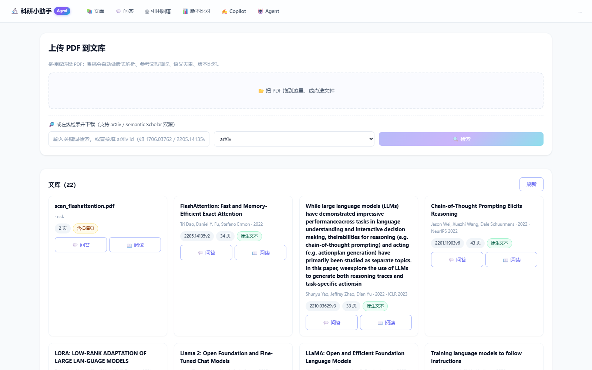
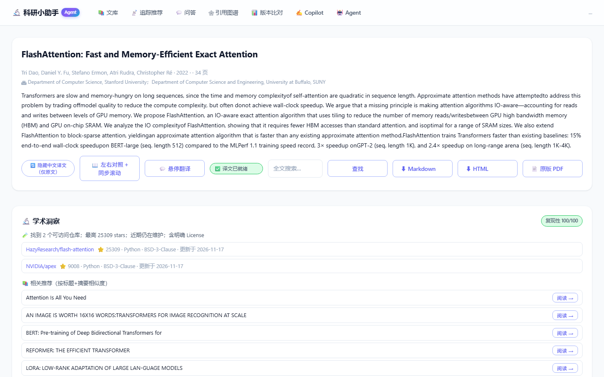
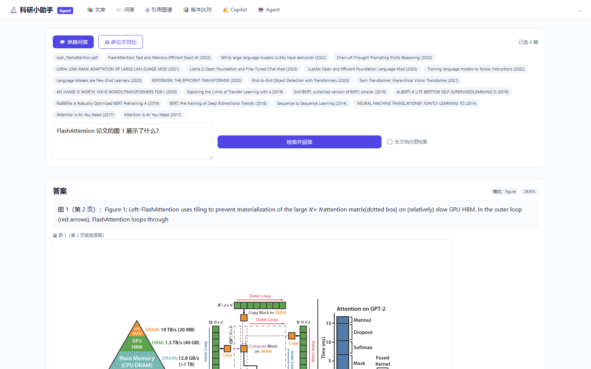
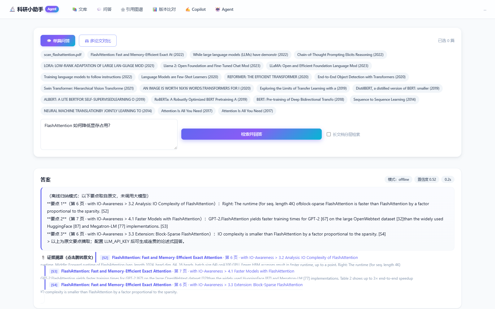
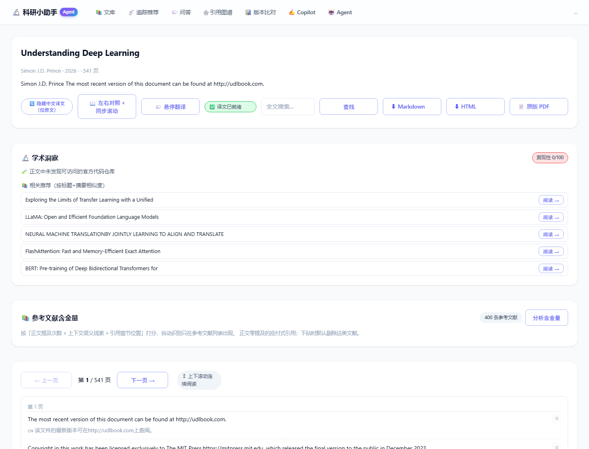
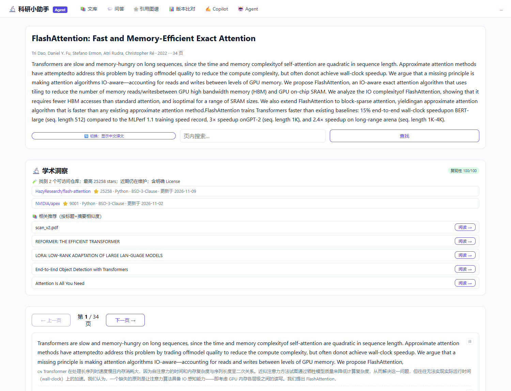
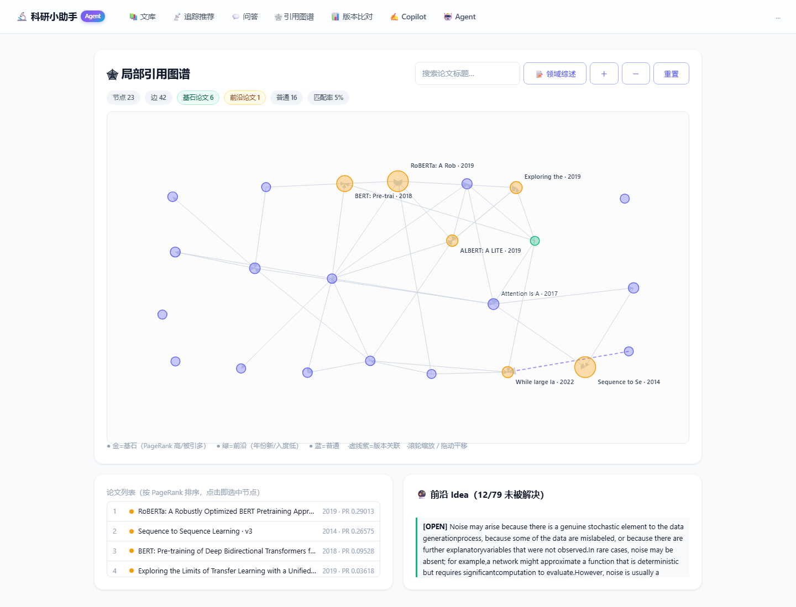
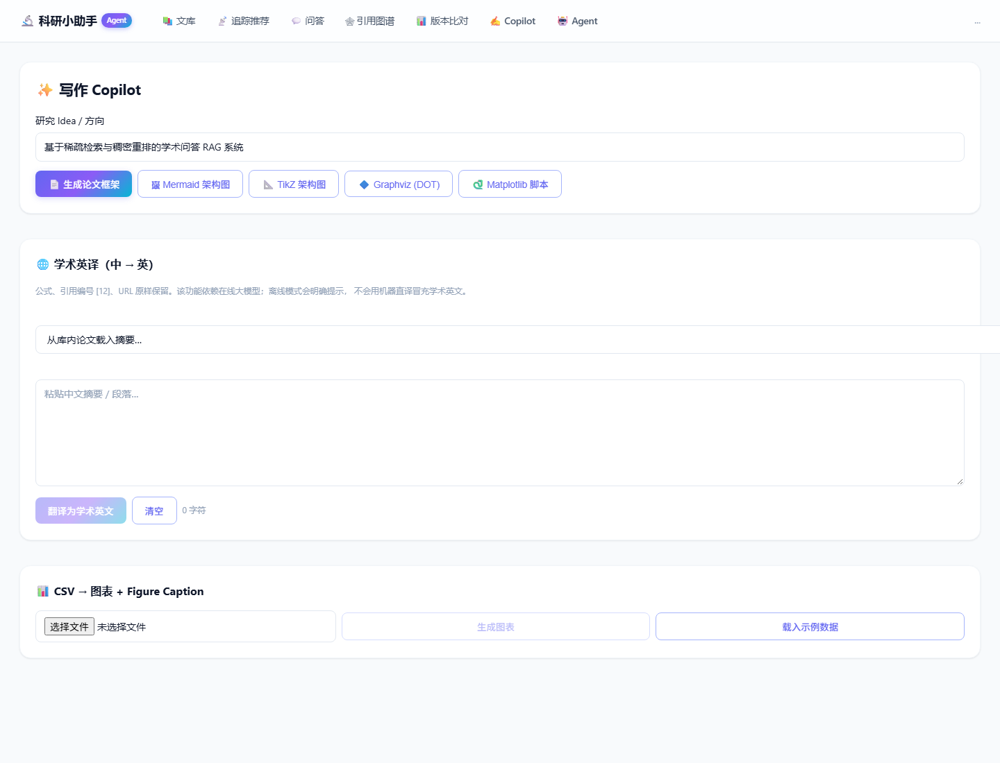
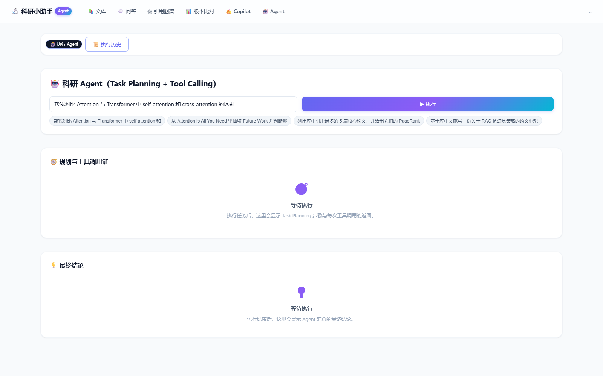
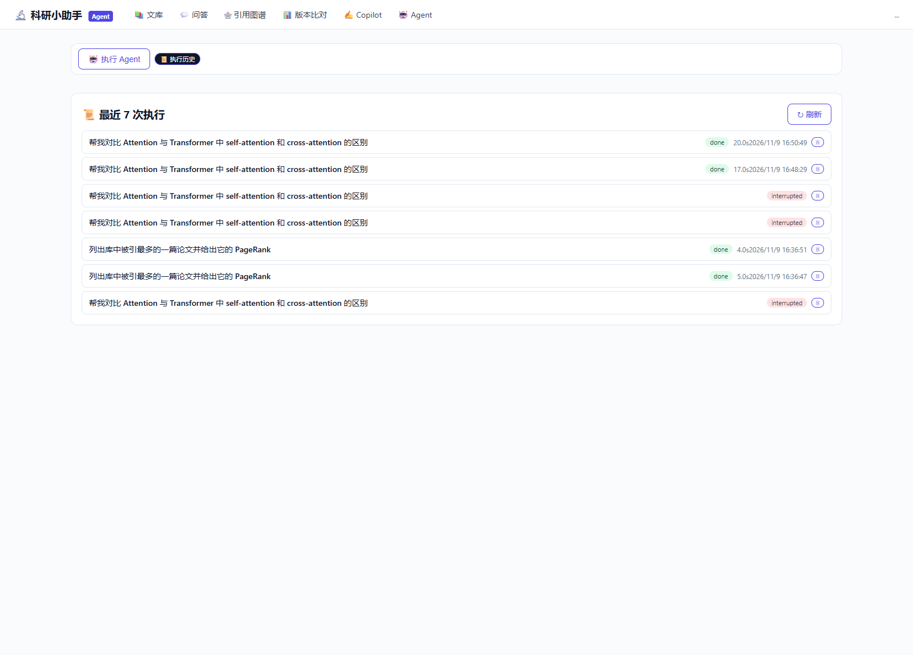

覆盖赛题 2.1 材料要求中的项目介绍、技术架构、安装运行、环境配置、测试与部署；技术文档 2.3 要求的全部章节。
所有数字来自演示库实时接口与 pytest 结果，未使用估算值；截图均来自本机运行实例。
科研人员的日常不是「读一篇论文」，而是同时管理几十上百篇 PDF：找版本、读公式、找引用、写综述、复现实验。通用大模型能回答问题，却有三个硬伤：看不到版面结构、引用无法追溯、离线不可用。
直接抽文本会打乱双栏顺序，标题、表格、公式、图注混成一段，后续检索与阅读都失真。
模型会编造不存在的参考文献与页码，评审与科研写作都无法接受。
向量库、OCR、模型网关任何一环缺失，演示就中断，无法稳定交付。
系统把「解析 → 管理 → 检索 → 问答 → 翻译 → 引用分析 → 综述 → 写作 → Agent」做成一条可追溯的流水线。所有结论都落到论文 + 页码 + bbox的结构化切片上，模型只负责在证据范围内组织语言。
| 提交项 | 内容 | 状态 |
|---|---|---|
| 代码仓库 | GitHub Public：github.com/zyt88888/research-copilot，53+ 次提交 | 已就绪，需确认 Public |
| README | 项目介绍、架构、安装运行、API、评测、局限、团队信息 | 已就绪 |
| 环境配置 | backend/.env.example + requirements.txt + package.json | 已就绪，Key 不入库 |
| 演示数据 | data/app.db + 24 个 PDF（含扫描件、版本对） | 随仓库提供 |
| 演示视频 | 5–8 分钟、1080p、MP4，按《演示脚本_8分钟录屏.md》录制 | 待录制 |
| 技术文档 | 本 PDF，≤30 页，图文并茂 | 已生成 |
| 在线演示 | 公网可访问地址，评审期保持可用 | 待部署 |
backend/.env 不含任何真实 Key，正式部署通过环境变量注入。| 赛题模块 | 关键要求 | 本项目实现 | 入口 / 章节 |
|---|---|---|---|
| 模块一 PDF 管理与多模态解析 |
单篇/批量上传；基于内容的语义去重与版本建议；扫描件 OCR；长篇书籍；标题、作者与机构、摘要、标题树、表格、图、公式、参考文献、附录 | 多选/拖拽批量上传 + MinHash 语义去重；PyMuPDF 版式重建 + PaddleOCR；标题树、表格转 MD、公式/图注分块；首页作者区机构抽取；图表 bbox 裁切内联 | 文库 / 阅读器 §5.1 |
| 模块二 RAG 精准问答与跨文献对比 |
基于库内文献精准回答；答案可溯源；多篇跨文献对比 | BM25 + 384 维稠密向量 + RRF；中文问题改写英文检索；证据卡带页码/bbox；生成后引用校验；低置信拒答；多论文分维度对比 | 问答 / 版本比对 §5.2 |
| 模块三 版式阅读与中英对照 |
保留版式阅读；双向引用跳转；中英对照同步滚动；翻译；导出 | 阅读器按页还原；正文 [n] ↔ References 双向跳转；左右双栏按比例同步滚动；悬停/划词翻译；Markdown/HTML/原版 PDF 导出 | 阅读器 §5.3 |
| 模块四 参考文献价值与追踪 |
参考文献含金量；下钻；arXiv 追踪；反馈 | 正文提及 + 语义线索 + 章节位置加权打分；四档分级；按分数下钻入库；arXiv 主题追踪 + 点赞踩重排 | 阅读器 / 追踪推荐 §5.4 |
| 模块五 引用图谱与领域综述 |
引用关系可视化；领域综述自动生成 | PageRank 三层角色 + 版本虚线；Future Work 抽取与 open/resolved；综述只用库内真实元数据，[P#] 逐条校验 | 引用图谱 §5.5 |
| 模块六 写作 Copilot |
论文框架；图表生成；CSV 转图；学术英译 | 7 章节框架 + 真实参考文献；Mermaid / TikZ / Graphviz / Matplotlib；CSV→图；中→英占位符保护 | Copilot §5.6 |
| 综合 Agent 闭环 |
自主规划、工具调用、闭环探索 | 16 个工具；规划→调用→观察→再规划→汇总；SSE 事件流；执行历史可回放；工具调用语义去重 | Agent §5.7 |
| 角色 | 核心诉求 | 系统响应 |
|---|---|---|
| 研究生（开题/综述） | 快速摸清一个领域的脉络与开放问题 | 引用图谱看基石/前沿 → Future Work 找 open 项 → 一键生成领域综述（引用可核验） |
| 研究生（精读） | 读懂长文、公式、图表，跨语言阅读 | 版式阅读 + 标题树 + 表格原生渲染 + 图内联 + 左右对照翻译 + 划词/悬停翻译 |
| 科研教师（写作） | 写引言/相关工作，引用必须真实 | 写作 Copilot 生成框架，参考文献只从库内取；中→英翻译保护公式与引用 |
| 算法工程师（复现） | 找代码、判断可复现性、追踪新工作 | GitHub 复现性评分、相关论文推荐、arXiv 追踪与个性化反馈 |
| 评审/答辩 | 快速验证功能真实、技术有深度 | 每个结论带页码引用；Agent 事件流可审计；107 条测试与实时指标可复现 |
问答、图表解读、综述中的每条引用都能定位到论文、页码与原文片段；不允许只给结论。
生成后做引用编号校验；证据不足明确拒答；综述与写作不伪造参考文献。
无 LLM → 抽取式回答；无向量 API → 384 维特征哈希；无 OCR → 标记 needs_ocr。
Docker Compose 一条命令；数据目录挂载；SQLite 单文件，不依赖外部向量库/图数据库。
问答 2–5 秒；图谱首次 8–10 秒、缓存命中 0.3 秒；翻译按段落增量返回。
API Key 只走环境变量；代码沙箱 AST 检查 + 资源限制；PDF 与切片本地存储。
展示层只调 API，API 只编排服务，服务只依赖数据层；换前端或换模型不影响解析与检索。
所有 AI 能力先取证据再生成；证据不存在时宁可拒答，也不让模型自由发挥。
每个外部依赖都有本地替代；任何一环失败只降低效果，不中断主流程。
| 表 | 关键字段 | 用途 |
|---|---|---|
| papers | id / title / authors / year / abstract / num_pages / meta | 论文元数据；机构信息在 meta.affiliations |
| chunks | id / paper_id / page / kind / text / bbox / section / vec | 结构化切片：paragraph / heading / table / formula / figure / caption / ocr / ref |
| refs | paper_id / idx / raw / title / arxiv_id / matched_paper | 参考文献条目与库内匹配关系，供图谱与含金量分析 |
| translations | chunk_id / lang / text | 中文译文缓存，导出与对照阅读复用 |
| runs | id / task / plan / events / status / duration | Agent 执行历史，支持回放与审计 |
| graph_cache | version / payload | 图谱按 graph_version 缓存，论文增删自动失效 |
| feedback / track_runs | user_id / paper_id / vote / created_at | 追踪推荐反馈与定时任务租约 |
上传 → 计算 MinHash 指纹 → 判重（同版本 / arXiv 家族新版本）→ PyMuPDF 解析（双栏、字号、表格、公式、图注）→ 无文本层页面 OCR → 切片落库 → 异步补全 arXiv 元数据 → 建立引用与向量索引。
任务 → 规划（JSON 步骤）→ 选择工具（16 个）→ 执行并观察 → 判断是否继续（最多 6 步）→ 汇总。全程 SSE 推送 plan / step_start / tool_result / token / final 事件，执行记录落库可回放。
research-copilot-backend（8000，健康检查 /api/health）与 research-copilot-web（3000），web 等 backend healthy 后启动。
./data 挂载到 /app/data：SQLite、原始 PDF、图表裁切缓存；重建容器不丢数据。
| 环节 | 选择 | 为什么选它 | 替代方案与代价 |
|---|---|---|---|
| 生成模型 | DeepSeek / OpenAI 兼容网关 | 中文理解与写作强、成本低、函数调用稳定；通过 LLM_BASE_URL 可无缝换 Qwen / GPT / 本地 vLLM，不绑死厂商。 | GPT-4：效果接近但成本高；本地 7B：部署门槛高、工具调用不稳定。 |
| Embedding | 384 维特征哈希（默认）+ 可选 BGE-M3 | 零外部依赖、断网可用，保证评审现场不会因向量服务失败而中断；有 Key 时可切在线模型提升语义召回。 | 外部向量库：多一个服务与网络依赖，演示风险高。 |
| 检索 | BM25 稀疏 + 稠密向量 + RRF | BM25 对术语、编号、公式符号敏感；稠密向量抗同义改写；RRF 只依赖排名，不需要分数归一化。 | 纯向量：专有名词与编号召回不稳；纯 BM25：跨语言与改写弱。 |
| 解析 | PyMuPDF + PaddleOCR | PyMuPDF 提供字体、字号、bbox、阅读顺序，能还原版式；PaddleOCR 中文模型预下载进镜像，断网可用。 | pdfplumber：版式信息少；云 OCR：需联网、按量计费。 |
| 知识图谱 | NetworkX PageRank | 23–千级节点规模下内存计算足够快；无需图数据库，结果可缓存进 SQLite。 | Neo4j：运维成本高，对当前规模过度设计。 |
| 存储 | SQLite（WAL） | 单文件随仓库交付、事务可靠、零配置；BM25 与向量在进程内计算，评测环境一键复现。 | Postgres + pgvector：需要额外容器与初始化脚本。 |
| Agent | 自研 JSON 规划 + SSE | 工具选择、参数、观察结果全部可见；可按「工具 + 关键参数」去重；执行历史可回放，适合答辩讲清每一步。 | LangChain：抽象层厚，事件流与去重不易讲透。 |
所有生成能力（问答、翻译、综述、写作、Agent 汇总）走同一个 llm.chat() 封装，通过 LLM_BASE_URL / LLM_API_KEY / LLM_MODEL 配置。换模型只改环境变量，不改业务代码；无 Key 时 llm.is_available() 为 false，自动进入离线分支。
System：只能依据给定的检索片段回答；每个结论后标注 [S#]；证据不足时明确说「文献库中没有检索到相关内容」，禁止补充外部知识。
User：问题 + 编号证据片段（含论文标题、页码、原文）。
后处理：正则抽取答案中的 [S#]，与本次召回集合比对；非法编号剔除并告警；若没有任何有效引用，降级为拒答或抽取式摘要。
Agent 的 16 个工具以 JSON Schema 描述（检索、图表理解、Future Work、综述、翻译、代码沙箱、arXiv 检索、复现性、推荐等）。规划器输出步骤列表，执行器逐步调用并把 tool_result 回填上下文；SSE 由 Next.js Route Handler 直接透传，避免 rewrite 缓冲导致「看起来卡住」。
问答中识别「图 N / Figure N」→ 在图注块中定位 → PyMuPDF 按 bbox 2× 裁切 → OCR 图内文字 → 图注 + 同页正文 + OCR 文本作为唯一依据交给模型解读。阅读器内联图片接口使用 with_ocr=False，只裁图不 OCR，避免批量打开论文时的内存峰值。
译前把 $...$ 公式、[12] 引用、URL、代码块替换为不可翻译占位符，译后还原。这样中→英与英→中都不会破坏 LaTeX 与引用编号；离线时直接返回明确提示，不输出伪译文。
| 策略 | 做法 | 效果 / 证据 |
|---|---|---|
| 结构化切片 | 按 900 字符 / 120 重叠切分，保留 page、bbox、section、kind；标题、表格、公式、图注单独成块。 | 检索命中后可直接跳页码与高亮区域 |
| 混合检索 + RRF | BM25 与稠密向量各取 Top-K，按排名融合（k=60），不做分数归一化。 | hybrid recall@1 0.75 / recall@5 0.95 / MRR@10 0.833 |
| 长文档分层检索 | 章节级粗索引（无章节按 10 页分带）→ RRF 选 6 节 → 块级下钻 → 与全局结果按 chunk_id 再融合。 | hierarchical recall@1 0.80，优于全局 0.75 |
| 跨语言查询改写 | 中文问题先经 LLM 改写为英文检索关键词，单独一路参与 RRF；希腊字母英文名扩展为符号（beta1→β1）。 | 中文提问也能召回英文原文 |
| 语义去重 | 64-permutation MinHash + shingle(5)，阈值 0.45；arXiv 底号强关联，区分同版本与不同版本。 | 重复上传直接拦截；版本差异可结构化展示 |
| 缓存 | 图谱按 graph_version 缓存；译文按 chunk 缓存；图表裁切落盘复用；S2 结果 300 秒缓存。 | 图谱首次 8–10 秒 → 命中 0.3 秒 |
| Agent 去重 | 默认参数填充后按「工具 + 关键参数」生成语义键，大小写/空白/列表顺序不敏感。 | 避免同一工具同参数重复调用 |
| 内存控制 | 阅读器内联图禁用 OCR；OCR 仅在问答/解析需要时触发；代码沙箱限制 3GB 地址空间。 | 修复批量打开论文导致的后端 OOM |
① 只召回库内切片；② Prompt 限定只依据证据；③ 生成后校验 [S#] 合法性；④ 无有效证据则拒答。四道闸门任一不满足都不会输出结论。
答案附证据卡（论文、页码、原文片段、bbox）；点击可跳阅读器并高亮；图表解读附裁剪原图与图内 OCR 文本。
综述与写作的参考文献只从库内 papers / refs 取；综述中的 [P#] 逐条校验，非法编号与伪造 References 段直接剔除。
翻译无在线模型时返回明确提示；问答降级为抽取式摘要并标注模式；OCR 失败标记 needs_ocr 而不是编造文本。
backend/scripts/bench_retrieval.py 跑 20 条冒烟查询得到；Agent 指标由 bench_agent.py 跑 10 个固定任务得到（成功率 10/10，平均 1.4 步、23.7 秒）。

multiple + 拖拽多文件，前端串行调用上传接口，汇总成功 / 重复 / 失败；重复项提示「建议保留最新版本」，失败条目逐条展示，不静默吞错。<table>；公式、图注、参考文献分别成块；扫描件走 PaddleOCR 中文模型。GET /papers/{id}/figures 列出图号 / 页码 / 图注；阅读器按图注块懒加载 /figures/{n}/image，PyMuPDF 2× 裁切并落盘缓存；图表接口禁用 OCR，避免内存峰值。Department of Computer Science, Stanford University 与 University at Buffalo, SUNY；Chain-of-Thought 抽取到 Google Research, Brain Team；图表接口 3 张图均返回 image/png（57–79KB），后端保持 healthy。
BM25 + 384 维稠密向量，RRF(k=60) 融合；中文问题改写英文关键词单独一路；支持长文档分层检索开关。
只依据证据片段生成；答案中每个 [S#] 对应一条证据；生成后校验编号，非法引用剔除；无证据拒答。
选定多篇论文后，按「核心方法 / 参数规模 / 实验结论 / 继承与抛弃关系」分维度对比；在线 LLM 只依据检索证据并标注 [S#]，要求指出承接、改进、被替换的设计及参数量/上下文长度演化；无 LLM 时退回逐篇证据卡片，仍可读。版本比对页同时展示正文重合度、章节增删与关键词差异。

正文 [11] / [11,12] / [11–13] 渲染为可点击角标；点击滚动并高亮 References 条目；条目「↩ 正文」回到首次引用段落。
左右双栏按内容比例同步；滚动锁避免互相触发抖动；移动端退化为上下堆叠。
公式、引用、URL、代码块占位符保护；支持整篇、段落、划词、悬停四种粒度；译文按段落增量补齐。
支持 Markdown / HTML（可附加已缓存中文译文）与原版 PDF 下载。导出只使用已落库的真实切片与译文，不重新生成内容；Markdown 转义 HTML 特殊字符，避免注入。

| 能力 | 实现 | 实测 |
|---|---|---|
| 引用含金量 | 正文提及（数字标记 + 标题关键词，排除 References 块）+ 语义线索（提出/改进/采用/对比/启发/局限）+ 章节位置，加权 0–100 分；正文零提及判为应付式。 | T5 论文 27 条参考文献，分析 1.5s：高价值 3 / 一般 8 / 弱引用 11 / 应付式 5 |
| 批量下钻 | 默认过滤 <30 分；标题相似度 ≥0.55 才入库；后台任务逐条解析 arXiv id → 下载 → 入库；任务进度可轮询。 | 下钻任务返回逐条结果与状态 |
| arXiv 追踪 | 从本地库提炼 3 组主题 → 按投稿时间倒序检索 → 词面覆盖 0.75 + 库内最佳向量相似度 0.25 → 可核实推荐理由；开源仓库 +0.18。 | 23 篇库；单次抓取 22 篇约 18s |
| 反馈重排 | 点赞/踩写入 feedback 表，按用户画像重排；多用户互不影响。 | 推荐列表按反馈变化 |

参考文献标题与库内论文匹配（1,139 条中匹配 54 条）；NetworkX PageRank 分 bedrock / normal / frontier 三层；同系列版本用虚线。
抽取 Future Work / 展望段落并判断是否已被后续论文覆盖；当前 79 条，其中 12 条 open。
[P#]；生成后校验编号，非法编号与伪造 References 段一律剔除。
| 能力 | 实现 | 约束 |
|---|---|---|
| 论文框架 | 按 7 章节（Abstract → Conclusion）生成提纲，附每节写作要点与库内可引用论文。 | 参考文献只从库内 23 篇取，不伪造 |
| 图表 | Mermaid / TikZ / Graphviz DOT / Matplotlib Python 四类；均有离线可运行模板。 | 代码块可直接复制执行 |
| CSV 转图 | 解析 CSV 表头与数值列，生成 Matplotlib 脚本或图表建议。 | 不臆造数据，只基于上传 CSV |
| 学术英译 | 中→英；支持粘贴中文或载入库内论文摘要；公式/引用/URL 占位符保护。 | 无在线模型时明确提示，不输出假译文 |
/api/copilot/outline、/diagram、/csv 与 /api/translate），前端只做参数编排；因此同一能力可被 Agent 作为工具复用。

检索问答、图表理解、Future Work、领域综述、翻译、代码沙箱、arXiv 检索/入库、复现性、推荐、版本差异、引用质量等。
按「工具 + 关键参数」语义去重；最多 6 步；每步事件实时 SSE 推送并落库。
Agent 先输出计划，再根据工具返回决定下一步；例如「总结创新点并列出研究方向」会走：answer_question → future_work → final。这样每一步都有可核查的中间证据，而不是让模型凭记忆写一段。
| 测试文件 | 覆盖内容 |
|---|---|
| test_smoke.py | 健康检查、论文入库、切片、检索、图谱、删除、翻译、上传与导出 |
| test_module4.py | 引用含金量打分、批量下钻、arXiv 追踪、反馈重排 |
| test_module56.py | 领域综述与 [P#] 引用校验、Graphviz/Matplotlib 模板、中→英不伪造、Markdown/HTML 导出、机构抽取与图表列表 |
测试使用隔离临时库，不污染演示数据；容器内执行 python -m pytest tests/ -q，当前结果 107 passed, 4 skipped。跳过项为需要在线模型或特定系统条件的用例，不影响离线功能。
| 指标 | 实测值 | 复现方式 |
|---|---|---|
| 演示库规模 | 23 篇 / 8,527 切片 / 1,139 条参考文献 / 796 条译文 | GET /api/papers/stats |
| 检索质量 | hybrid recall@1 0.75 / recall@5 0.95 / MRR@10 0.833；分层 0.80 / 0.95 / 0.867 | bench_retrieval.py |
| 问答时延 | 约 2–5 秒（在线 DeepSeek） | POST /api/chat |
| 引用图谱 | 23 节点 / 42 边 / 6 基石 / 1 前沿；首次 8–10s，缓存 0.3s | GET /api/graph |
| Future Work | 79 条抽取，12 条 open | GET /api/future |
| 引用含金量 | T5 27 条，分析 1.5s；高价值 3 / 一般 8 / 弱引用 11 / 应付式 5 | GET /api/papers/{id}/refs/quality |
| 图表理解 | 裁剪原图 57–79KB PNG + 图内 OCR 文本 | GET /api/figures/{id}/{n} |
| Agent | 10/10；平均 1.4 步 / 23.7s；8/10 带页码引用 | bench_agent.py |
docker compose up -d --build
后端 8000 / 前端 3000；后端健康检查通过后前端才启动；./data 挂载持久化。
LLM_BASE_URL / LLM_API_KEY / LLM_MODEL；EMBEDDING_PROVIDER；DATA_DIR / DB_PATH；OCR_ENABLED / OCR_LANG；CORS_ORIGINS。模板见 backend/.env.example。
后端 12 项（FastAPI / PyMuPDF / PaddleOCR / NetworkX / NumPy 等）；前端 Next.js 14 + React 18 + TypeScript；无额外向量库/图数据库。
OCR 中文模型预下载进镜像；无 Key 时自动降级；断网仍可解析、检索、阅读、图谱与抽取式问答。
| 风险 | 措施 |
|---|---|
| API Key 泄露 | Key 只通过环境变量注入；仓库只保留 .env.example；公开仓库不含任何真实 Key。 |
| 代码执行 | 沙箱 AST 静态检查（危险模块/调用/逃逸链属性）+ POSIX setsid + CPU 30s / 地址空间 3GB 限制；5 种逃逸攻击实测全拦。 |
| 路径穿越 | 图片/产物文件名白名单校验；PDF 路径多级回退但限定在数据目录。 |
| 数据边界 | PDF、切片、译文全部本地存储；只把检索命中的片段发送给模型；不训练、不外传全量文档。 |
| 输出注入 | Markdown 导出转义 HTML；前端渲染不使用 dangerouslySetInnerHTML 处理用户内容。 |
git log 中无 Key 提交；演示视频与在线地址已补入 README。解析产物不是纯文本，而是带 page / bbox / section / kind 的结构化块；检索、问答、图表解读、引用跳转、导出全部复用同一套块，任何结论都能回到原文位置。
BM25 + 稠密向量 + 中文查询改写 + 分层检索，四路结果按 chunk_id 做 RRF 再融合，兼顾术语、语义、跨语言与长文档。
不是「提示模型别编」，而是在生成后用正则与召回集合做硬校验：非法 [S#] 剔除、无有效引用则拒答，形成可验证的抗幻觉闭环。
公式 / 引用 / URL / 代码块先替换为占位符再翻译，译后还原；离线时明确拒绝而不输出伪译文，保证双语阅读不破坏 LaTeX。
MinHash 判定同版本，arXiv 同底号不同版本给出正文重合度、章节增删与关键词差异，而不是简单拒绝上传。
自研 JSON 规划 + SSE 事件流 + 工具调用语义去重 + 执行落库回放；每一步「为什么调这个工具」都可解释。
图注定位 → bbox 裁切 → 图内 OCR → 仅依据图注/同页正文/OCR 作答；阅读器内联图与问答图共用裁切缓存。
| 编号 | 应用创新 | 用户价值 |
|---|---|---|
| A1 | 科研 PDF 全流程一站式 | 入库、去重、精读、问答、翻译、引用分析、综述、写作、Agent 在同一界面完成，不需要在 5–6 个工具间复制粘贴。 |
| A2 | 参考文献四档含金量 | 把「引用次数」换成「正文是否真的用了」，帮研究生快速判断哪些文献必须精读、哪些只是凑数。 |
| A3 | 可核验的领域综述 | 综述中的每条 [P#] 都指向库内真实论文；离线也有抽取式版本，开题调研可直接用。 |
| A4 | 不伪造引用的写作 Copilot | 框架、图表、英译都可直接用于论文初稿；参考文献只从库内取，避免「看起来很像」的假引用。 |
| A5 | arXiv 动态追踪 + 个性化反馈 | 从自己的库提炼主题，自动抓新论文并按相关度排序；点赞踩会改变后续推荐，越用越准。 |
| A6 | 全链路离线降级 | 评审现场断网/无 Key 也能完整演示解析、检索、阅读、图谱与抽取式问答，不会「一断网就白屏」。 |
| A7 | 单文件交付与一键部署 | SQLite 单文件 + Docker Compose；换机、评审复现、答辩演示都不需要 DBA 或运维。 |
| 维度 | 直接调用大模型 | 本项目 |
|---|---|---|
| 引用 | 可能编造文献、页码、仓库地址 | 只引用库内真实切片；生成后校验，非法引用剔除 |
| 定位 | 只能给一段文字 | 每条结论可跳转到论文页码并高亮 bbox |
| 版面 | 看不到双栏、表格、公式、图注 | 结构化解析 + 原生表格 + 公式块 + 图表裁切 |
| 长文 | 受上下文限制，容易漏读 | 分层检索：章节粗索引 → 块级下钻 → RRF 合并 |
| 离线 | 无网络即不可用 | 三级降级，断网仍可完成核心流程 |
| 可审计 | 黑盒输出 | Agent 事件流、工具参数、执行历史全部可见 |
| 数据 | 文档需上传到第三方 | 本地存储，只发送检索命中的片段 |
| 局限 | 说明与应对 |
|---|---|
| OCR 上限 | 手写体、低分辨率扫描件识别率有限；页面标记 needs_ocr，不编造文本。 |
| 极端版式 | 少量双栏 PDF 会出现单词粘连（如 otherstrategies），阅读页可对照原文核对。 |
| 评测集规模 | 检索 20 条、Agent 10 条为自建小集；已支持 BEIR 风格 qrels，可换公开数据集。 |
| 机构与附录 | 机构从首页作者区抽取，预印本本身未写机构时留空；附录未单独打标，若解析出标题会进标题树。 |
| 在线演示 | 当前为本机 Docker 演示，公网地址需在提交前部署。 |
支持 LaTeX 源码、Word、HTML 论文；公式转 MathML 便于复制。
接入 BEIR / SciFact 等公开检索与事实核查数据集，做横向对比。
多用户空间、团队共享库；提供公网部署模板与对象存储方案。
| 接口 | 说明 |
|---|---|
GET/POST /api/papers | 列表 / 上传（解析、去重、索引） |
GET /api/papers/{id}/chunks | 阅读器分页切片（含 bbox） |
GET /api/papers/{id}/figuresGET /api/papers/{id}/figures/{n}/image | 图表列表 / 按需裁切 PNG（内联展示禁用 OCR） |
GET /api/papers/{id}/export | Markdown / HTML 导出（可附中文译文） |
POST /api/chat | RAG 问答（证据、置信度、拒答、图表通道） |
POST /api/compare | 多论文多维对比 |
GET /api/graph | 引用图谱 + PageRank 分层（缓存） |
GET /api/future | Future Work 抽取与 open/resolved |
POST /api/survey | 领域综述（llm / offline，引用校验） |
POST /api/translate | 段落 / 整篇翻译（target=en） |
POST /api/copilot/{outline,diagram,csv} | 框架 / 图表 / CSV 转图 |
POST /api/code/run | 受限 Python 沙箱（stdout / 图片） |
GET /api/insights/reproducibilityGET /api/insights/recommend | 复现性评分 / 相关论文推荐 |
GET /api/papers/{id}/refs/qualityPOST /api/papers/{id}/drill | 引用含金量 / 批量下钻 |
GET /api/tracking 等 | arXiv 追踪、刷新、反馈、状态 |
01 文库 · 02 问答 · 03 阅读器 · 04 图谱 · 05 Copilot · 06 Agent · 06b 执行历史 · 07 版本比对 · 08 arXiv · 09 Python 沙箱 · 10 学术洞察 · 11 图表理解 · 12 移动端 · 13 双源检索 · 14 机构信息 · 15 内联图表。全部位于 docs/screenshots/。